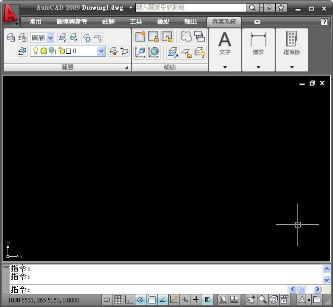
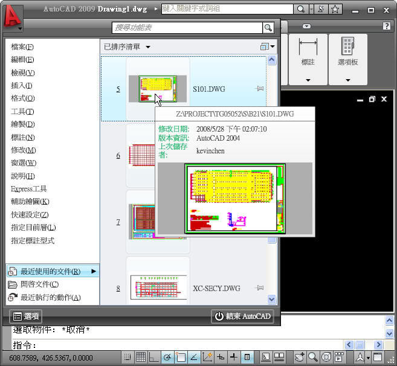
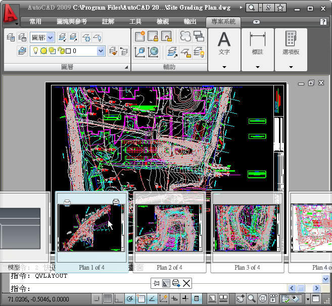
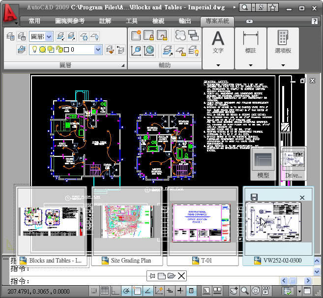
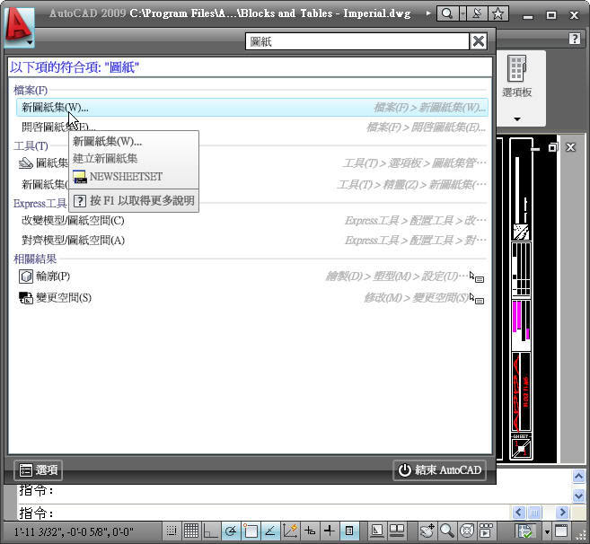
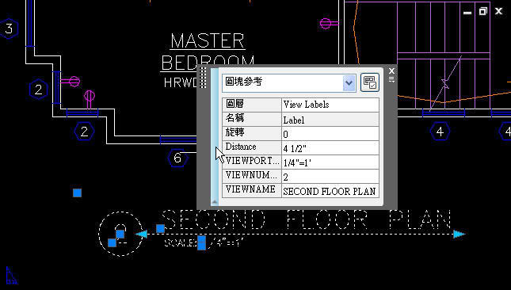
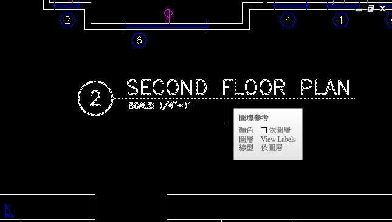
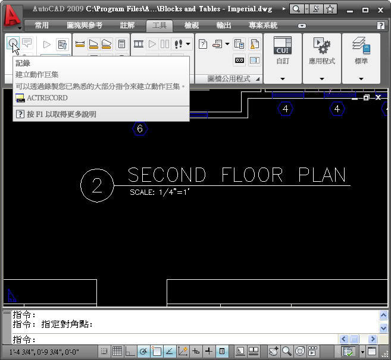

最近接獲原廠的測試邀請，目的為AutoCAD 2009對於業界的實質幫助及影響，以下是我目前的測試使用心得與大家分享，有興趣的朋友也歡迎一起提出來討論喔~
對於剛接觸到AutoCAD 2009時，使用者本身會有一個很大的疑慮，這個版本的全新改版對企業界能有多少正面的幫助，是否會讓人有類似VISTA的困擾，介面只是美美的但很耗資源。或許對於新接觸AutoCAD的使用者可能會沒有什麼感覺，但是已有使用AutoCAD其他的版本的使用者，對於AutoCAD 2009可能會產生排斥，因為使用AutoCAD 2009這對他目前的工作將是一個挑戰，寧可選擇使用舊版本保有原來的工作效率，這也是一直以來AutoCAD新版本的新功能常常無法發揮作用的原因之一。除非有配套措施才能在新版本的推行上有正面幫助，如果能加強說明及提供相關功能的文件，並舉辦新功能說明會，最重要的是提供當地的技術支援(線上)及教育訓練(整合型顧問)，不要再讓使用者本身自行摸索，否則會造成操作方法停留在舊版本的模式，希望將來能提供專業的解決方案進而協助達成共同目標，如此一來AutoCAD新版本也能順利推行。 AutoCAD 2009功能測試(2D)分為二個部份來說明：
一、 對於企業界直接幫助部份
功能區介面的簡潔視覺格式及顯示指令選項，在作業上感覺非常輕巧不佔版面，還可以透過公司標準來加以自訂，這是一個很棒的功能。

對於覽最近用過的檔案及使用動作，可快速預覽圖面在工作上提升很多效率，而舊式的功能表收在這功能表瀏覽器中，使得不常用的功能不會在佔螢幕版面了。

以前開啟多個配置時，總是會花一點時間找尋，現在可透過快速檢視配置快速開啟候選配置了。

透過快速檢視圖檔可以更快開啟正確圖檔及配置，同時縮減花在開啟不正確圖檔上的時間。

對於新使用者這可是一大福音，畢竟AutoCAD的相關功能指令很多，可以透過此方法快速搜尋所需功能。

這是我目前覺得最貼心的功能之一，對於平時工作時的圖面物件資訊能快速掌握，即時提昇工作效率。

工具提示可讓您即時存取：圖面物件資訊等等，是一個最佳幫手。

以前總要花時間來攥寫腳本，現在可透過動作錄製器來即時錄製，沈去了相當多的時間，而且對於吳寫程式的基礎者也可輕易上手。
